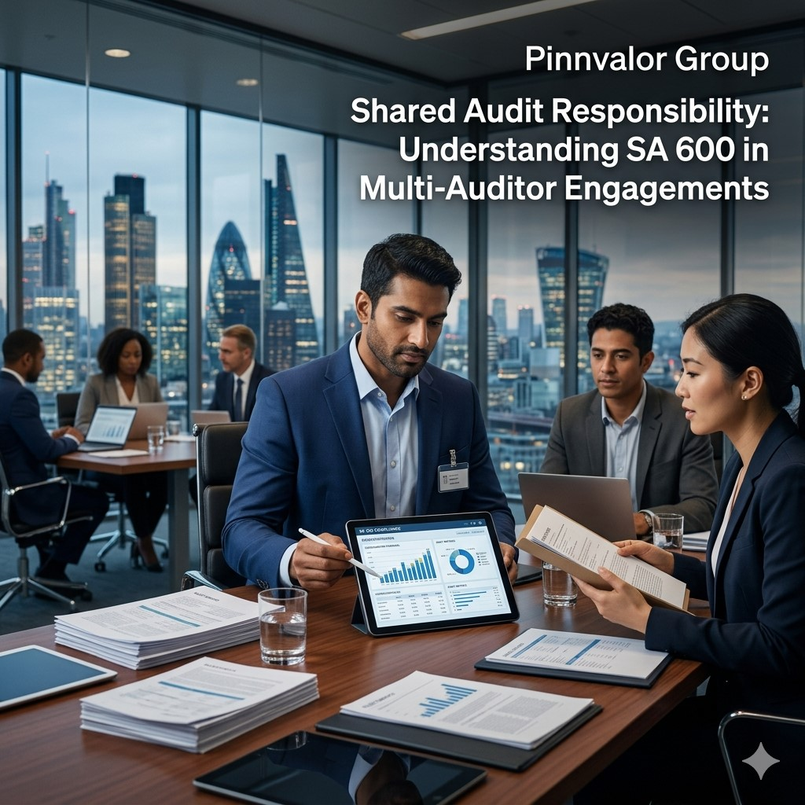

Shared Audit Responsibility: Understanding SA 600 in Multi-Auditor Engagements
In today’s global business environment, audits are no longer limited to a single auditor. Large organizations often operate across multiple countries, subsidiaries, and reporting units, each of which may be audited by different auditors. This makes coordination and consistency essential, which is exactly what SA 600 – Using the Work of Another Auditor addresses.
Is relying on another auditor’s work a strength or a risk in complex group audits?
Relying on another auditor’s work is not about convenience, it is about disciplined evaluation, professional skepticism, and structured oversight. SA 600 transforms coordination into controlled audit quality.
SA 600 establishes the principles for how a principal auditor can rely on the work of component auditors while still retaining overall responsibility for the audit opinion. It ensures that collaboration strengthens efficiency without weakening accountability.
Understanding the Core Idea of SA 600
At its core, SA 600 deals with multi-auditor engagements, where:
- A principal auditor is responsible for expressing the overall audit opinion on the financial statements.
- One or more component auditors audit subsidiaries, branches, or divisions of the entity.
Even though different auditors perform different parts of the audit, the principal auditor retains full responsibility for the final audit opinion.
Key principle: Delegation of audit work does not mean delegation of audit responsibility.
When Does SA 600 Apply?
SA 600 becomes relevant in situations such as:
- Entities with multiple subsidiaries or foreign operations
- Group audits involving different audit firms
- Separate audits of divisions or branches
- Complex corporate structures requiring distributed audit coverage
Example: A multinational company headquartered in India has subsidiaries in the UK and Singapore. Local auditors audit those subsidiaries, while the group auditor in India issues the consolidated audit opinion.
Role of the Principal Auditor
The principal auditor plays a central role in ensuring audit quality and consistency across the group. Their responsibilities include:
- Evaluating component auditors for competence, independence, and professional standards
- Determining reliance on the work performed by component auditors
- Issuing audit instructions to ensure consistency in audit approach
- Reviewing audit evidence where necessary for key risk areas
- Coordinating communication between all audit teams
Role of the Component Auditor
The component auditor is responsible for performing audit procedures for a specific entity, branch, or division. Their responsibilities include:
- Conducting audit work as per instructions from the principal auditor
- Identifying and reporting significant risks in their component
- Communicating audit findings clearly and promptly
- Maintaining proper documentation and audit evidence
However, their responsibility is limited to their assigned component only.

Key Principles of Shared Audit Responsibility
SA 600 is built on a few fundamental principles that define shared audit responsibility:
- Accountability remains centralized – The principal auditor is always responsible for the final opinion.
- Professional skepticism is mandatory – Reliance must be critically evaluated, not assumed.
- Active involvement is required – The principal auditor must participate in planning and risk assessment.
- Effective communication is essential – Miscommunication can impact audit quality and outcomes.
Challenges in Multi-Auditor Engagements
While SA 600 improves audit scalability, it also introduces certain challenges:
- Inconsistent audit quality across different firms or jurisdictions
- Coordination delays between multiple audit teams
- Differences in professional judgment across auditors
- Limited visibility into component audit working papers
How SA 600 Strengthens Audit Quality
Despite challenges, SA 600 significantly improves audit effectiveness by:
- Enabling audits of large and complex organizations
- Leveraging local expertise in different regions
- Improving efficiency in group audit execution
- Ensuring structured oversight by the principal auditor
Outcome: Stronger audit coverage with maintained accountability and consistency.
Best Practices for Effective Implementation
To ensure successful application of SA 600, auditors should follow these best practices:
- Set clear instructions early covering scope, timelines, and reporting expectations
- Evaluate component auditors for competence and independence
- Maintain continuous communication throughout the audit process
- Focus on high-risk areas during review and testing
- Ensure strong documentation for audit defensibility and transparency
Conclusion
SA 600 reflects the modern reality of auditing, where financial reporting often spans multiple entities, geographies, and audit teams. It provides a structured framework that enables collaboration while preserving audit integrity.
Key takeaway: While audit work can be shared across multiple auditors, audit responsibility remains firmly with the principal auditor.
Mastering SA 600 is essential for ensuring transparency, consistency, and trust in consolidated financial reporting.